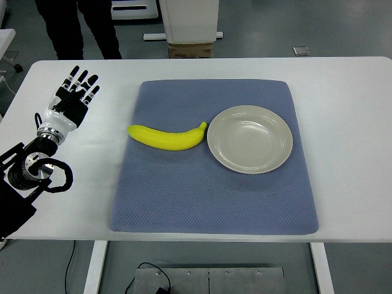

RoboMIND · tienkung_gello_1rgb__place_yellow_banana_on_plastic_plate/1212_141428
Place yellow banana on plastic plate

Annotation
From the dedicated visual review of this video (humanoid_action_v1). Plain text · JSON
Observed outcome
- Status
visually_completed
- Description
The left-edge hand closes its fingers around the left end of the banana (about frames 306-360), lifts it off the mat (by frames 356-358), carries it rightward over the plate and lowers it inside the rim (about frames 408-464), then opens its fingers (about frames 462-480). The banana rests inside the plate from about frame 478 through the final frame 635 and is not touched afterwards; the hand withdraws up and back toward the left edge and ends raised with open fingers.
Hand roles
- Active visible arm
The single visible arm (robot's left, entering from the left image edge) reaches the banana, grasps its left end with closed dexterous fingers, lifts and tilts it, carries it rightward to the plate, lowers it inside the rim, opens the fingers to release it, and withdraws up/back to a raised pose.
- Other arm
Not visible; its telemetry block (columns 8-15) is constant, so it does not act.
Coordination
Single arm acts alone; no hand-to-hand transfer, second hand or human interaction.
Robot-side evidence
- Visible description
Only one arm/hand is visible, entering from the left edge of the image with a black wrist/cable housing at the edge and a white forearm and black five-finger hand extending right along the table. The body, head and other arm are never visible; people's legs appear at the top-left background.
- Camera geometry
In the first frame the hand sits at the upper left with its fingers pointing away from the camera toward the table, and the arm reaches forward/right across the table, so the camera looks in the same direction as the robot (head/overhead view from behind the hand); under that geometry image left corresponds to the robot's left. The thumb appears on the right side of the hand with the back of the hand facing the camera, consistent with a left hand viewed from behind (native frame 0), but this is a supporting cue only.
- Telemetry
In puppet/joint_position, columns 0-7 move over the episode (hand-close column 7 about 1.0, then 0.99, then about 0.51 over frames 306-460, then 1.0 by frame 480) while columns 8-15 are constant over all 636 frames. In the earlier Tien Kung episode 1212_105714 the arm entering from the right image edge moved columns 8-15 instead, so the two episodes are mutually consistent with the first 8-dim block being the left arm and the second the right arm, although the source does not document the ordering.
- Source annotation
Publisher instruction: 'Place yellow banana on plastic plate' (no side given).
- Visual certainty
Moderate to high: the left side follows from the forward-looking camera geometry, the left-edge arm entry and the telemetry block consistency across two episodes. The overhead view does not show the torso, so it is not directly proven; the prompt also states the entry edge so the arm is unambiguous.
Chronology
| Frames | Observation |
|---|---|
| 0–58 | Hand is raised at the upper left of the mat with fingers pointing up/away from the camera and the black wrist/cable housing at the left image edge; essentially static (arm telemetry changes are negligible). Banana lies left of the plate on the mat; plate to its right. |
| 59–143 | Arm starts moving at about frame 59: the forearm and hand rotate and move up and forward, the white back of the forearm/hand becomes visible, and by about frames 140-143 the open hand is extended horizontally to the right along the top-left of the mat with fingers pointing right. |
| 144–167 | Hand sweeps right and lowers toward the banana's left end; fingers open, no contact yet (frames 144-166). |
| 168–305 | Fingertips reach the banana's left tip (native frames 168, 190 and 300); the open hand adjusts above and against the left end, pressing and re-aligning slightly (arm telemetry shows small continuing motion). The banana is not displaced or lifted; hand-close telemetry stays about 0.99. |
| 306–359 | Fingers close around the banana's left end (hand-close telemetry about 0.99 to 0.57 over roughly frames 306-360, 0.65 around 330-350); the banana stays on the mat through about frame 354 and has come off the mat, its right end swinging up, by frames 356-358 (native frame 356 shows fingers wrapped around the left end). |
| 360–407 | Banana is lifted clear of the mat and tilted with its right end raised (native 364); the grasp is maintained while the arm carries it rightward and forward toward the plate. Fingers stay closed (about 0.57-0.51). |
| 408–439 | Banana is carried to the left rim of the plate and then over it, moving farther right and down in the image; by native frame 420 it is above the plate's left rim held by the hand; at frames 432-438 it is over the plate. |
| 440–465 | Hand lowers the banana inside the plate's rim and holds it there (native 440 and 466); the banana's curve opens toward the camera; fingers remain closed (about 0.51-0.52) until about frame 462. |
| 466–479 | Fingers open (hand-close telemetry 0.52 to 0.93 to 1.0 over roughly frames 462-480; native 466 and 476 show the fingers relaxing); the banana settles in the plate and no longer follows the hand. |
| 480–503 | Open hand withdraws up and left away from the plate (native 484, 500); banana remains in the plate, lying along the plate's inner wall and not touching the hand. |
| 504–561 | Arm continues to retract toward the left image edge and rotates the open hand to point upward; banana unchanged in the plate. |
| 562–635 | Arm settles in a raised pose near the upper left, with the open fingers pointing up and slightly right and the wrist at the left edge, similar to the start pose; telemetry is nearly still after about frame 600. The banana rests inside the plate through the final frame 635 (native 635), both ends within the rim. |
Clip selection
The episode is one continuous single task (reach, grasp the banana, lift and carry it, lower it into the plate, release, withdraw); the complete sequence is retained, so no shortened clip or separate full-sequence prompt was made.
Differences from the publisher annotation
- The publisher instruction says 'yellow banana' and 'plastic plate'; the recorded frames show a teal/cyan banana-shaped object and a pale blue-gray plate, consistent with a red-blue channel swap in the stored frames. Shape and action otherwise match the instruction: the banana ends in the plate.
- The instruction says only 'place'; the video also includes a long open-hand adjustment at the banana's left end before the grasp, a lift, tilt and carry, and a final withdrawal, all kept as ordinary phases of one task.
Uncertainties
- Robot-relative left is inferred from camera geometry and telemetry block ordering, not from a visible torso; the ordering of the two 8-dim blocks is undocumented.
- The exact finger contacts on the banana (which fingers pinch or support) are not resolvable at 640x480; the grasp is described neutrally as fingers closing around the banana's left end.
- Frames 168-305 show the open hand touching and adjusting at the banana's left tip; whether the fingertips make firm contact before closing is not clearly visible, and the banana does not move until the fingers close.
- The banana is partly occluded by the hand during carry and lowering; the release moment is judged from the hand-close telemetry (0.52 to 1.0 at about frames 462-480) and from the banana staying put in the plate as the hand moves away.
- The video colour channels appear swapped (the 'yellow' banana looks teal/cyan, the plate pale blue-gray, the mat brown), so the target is identified by shape and the prompt gives no colours.
- FPS is not recorded; frame indices are authoritative, not time.
Complete review record action_review.json
{
"prompt_protocol": "humanoid_action_v1",
"prompt_protocol_note": "humanoid_action_v1 is applied by analogy to a non-Humanoid-Everyday/GR1 humanoid (Tien Kung with dexterous hands). The camera looks forward over the table from head height and the arm enters from the left image edge; the side is stated as the robot's left from that view plus telemetry, with the entry edge also given in the prompt.",
"prompt_provenance": "visually_authored_from_video_and_initial_frame",
"dataset": "x-humanoid-robomind/RoboMIND",
"task": "place_yellow_banana_on_plastic_plate",
"episode_id": "1212_141428",
"embodiment": "tienkung_gello_1rgb",
"generation_camera": "camera_top",
"source_video": "../../original/data/trajectory.hdf5",
"source_frame_count": 636,
"source_resolution": [
640,
480
],
"source_fps": null,
"source_fps_note": "FPS is not recorded in the source HDF5; 30 FPS is only a nominal playback rate, so no real-time durations are claimed.",
"selected_source_frame_start": 0,
"selected_source_frame_end_exclusive": 636,
"selected_frame_count": 636,
"selection_reason": "The episode is one continuous single task (reach, grasp the banana, lift and carry it, lower it into the plate, release, withdraw); the complete sequence is retained, so no shortened clip or separate full-sequence prompt was made.",
"usable_prompt": "The robot's left arm, entering from the left edge of the image, lowers its five-finger hand to the left end of the banana and closes its fingers around it. It lifts and tilts the banana, carries it rightward over the plate, and lowers it inside the plate's rim. The fingers then open to release the banana, which stays resting in the plate, and the arm withdraws up and back toward the left edge with the hand raised. Keep the camera fixed; preserve robot geometry, physically valid joint motion, and normal gripper opening and closing.",
"full_sequence_prompt": null,
"selected_action_outcome": {
"status": "visually_completed",
"description": "The left-edge hand closes its fingers around the left end of the banana (about frames 306-360), lifts it off the mat (by frames 356-358), carries it rightward over the plate and lowers it inside the rim (about frames 408-464), then opens its fingers (about frames 462-480). The banana rests inside the plate from about frame 478 through the final frame 635 and is not touched afterwards; the hand withdraws up and back toward the left edge and ends raised with open fingers."
},
"source_overall_outcome": {
"status": "visually_completed",
"source_quality_label": "success (archive member path is success_episodes/train; no per-frame label)",
"description": "Same as the selected action: the banana ends in the plate and the arm returns to a raised pose near its start."
},
"anatomical_side_evidence": {
"visible_description": "Only one arm/hand is visible, entering from the left edge of the image with a black wrist/cable housing at the edge and a white forearm and black five-finger hand extending right along the table. The body, head and other arm are never visible; people's legs appear at the top-left background.",
"camera_geometry": "In the first frame the hand sits at the upper left with its fingers pointing away from the camera toward the table, and the arm reaches forward/right across the table, so the camera looks in the same direction as the robot (head/overhead view from behind the hand); under that geometry image left corresponds to the robot's left. The thumb appears on the right side of the hand with the back of the hand facing the camera, consistent with a left hand viewed from behind (native frame 0), but this is a supporting cue only.",
"telemetry": "In puppet/joint_position, columns 0-7 move over the episode (hand-close column 7 about 1.0, then 0.99, then about 0.51 over frames 306-460, then 1.0 by frame 480) while columns 8-15 are constant over all 636 frames. In the earlier Tien Kung episode 1212_105714 the arm entering from the right image edge moved columns 8-15 instead, so the two episodes are mutually consistent with the first 8-dim block being the left arm and the second the right arm, although the source does not document the ordering.",
"source_annotation": "Publisher instruction: 'Place yellow banana on plastic plate' (no side given).",
"visual_certainty": "Moderate to high: the left side follows from the forward-looking camera geometry, the left-edge arm entry and the telemetry block consistency across two episodes. The overhead view does not show the torso, so it is not directly proven; the prompt also states the entry edge so the arm is unambiguous."
},
"arm_roles": {
"active_visible_arm": "The single visible arm (robot's left, entering from the left image edge) reaches the banana, grasps its left end with closed dexterous fingers, lifts and tilts it, carries it rightward to the plate, lowers it inside the rim, opens the fingers to release it, and withdraws up/back to a raised pose.",
"other_arm": "Not visible; its telemetry block (columns 8-15) is constant, so it does not act."
},
"coordination": "Single arm acts alone; no hand-to-hand transfer, second hand or human interaction.",
"chronology": [
{
"source_frames_inclusive": [
0,
58
],
"observation": "Hand is raised at the upper left of the mat with fingers pointing up/away from the camera and the black wrist/cable housing at the left image edge; essentially static (arm telemetry changes are negligible). Banana lies left of the plate on the mat; plate to its right."
},
{
"source_frames_inclusive": [
59,
143
],
"observation": "Arm starts moving at about frame 59: the forearm and hand rotate and move up and forward, the white back of the forearm/hand becomes visible, and by about frames 140-143 the open hand is extended horizontally to the right along the top-left of the mat with fingers pointing right."
},
{
"source_frames_inclusive": [
144,
167
],
"observation": "Hand sweeps right and lowers toward the banana's left end; fingers open, no contact yet (frames 144-166)."
},
{
"source_frames_inclusive": [
168,
305
],
"observation": "Fingertips reach the banana's left tip (native frames 168, 190 and 300); the open hand adjusts above and against the left end, pressing and re-aligning slightly (arm telemetry shows small continuing motion). The banana is not displaced or lifted; hand-close telemetry stays about 0.99."
},
{
"source_frames_inclusive": [
306,
359
],
"observation": "Fingers close around the banana's left end (hand-close telemetry about 0.99 to 0.57 over roughly frames 306-360, 0.65 around 330-350); the banana stays on the mat through about frame 354 and has come off the mat, its right end swinging up, by frames 356-358 (native frame 356 shows fingers wrapped around the left end)."
},
{
"source_frames_inclusive": [
360,
407
],
"observation": "Banana is lifted clear of the mat and tilted with its right end raised (native 364); the grasp is maintained while the arm carries it rightward and forward toward the plate. Fingers stay closed (about 0.57-0.51)."
},
{
"source_frames_inclusive": [
408,
439
],
"observation": "Banana is carried to the left rim of the plate and then over it, moving farther right and down in the image; by native frame 420 it is above the plate's left rim held by the hand; at frames 432-438 it is over the plate."
},
{
"source_frames_inclusive": [
440,
465
],
"observation": "Hand lowers the banana inside the plate's rim and holds it there (native 440 and 466); the banana's curve opens toward the camera; fingers remain closed (about 0.51-0.52) until about frame 462."
},
{
"source_frames_inclusive": [
466,
479
],
"observation": "Fingers open (hand-close telemetry 0.52 to 0.93 to 1.0 over roughly frames 462-480; native 466 and 476 show the fingers relaxing); the banana settles in the plate and no longer follows the hand."
},
{
"source_frames_inclusive": [
480,
503
],
"observation": "Open hand withdraws up and left away from the plate (native 484, 500); banana remains in the plate, lying along the plate's inner wall and not touching the hand."
},
{
"source_frames_inclusive": [
504,
561
],
"observation": "Arm continues to retract toward the left image edge and rotates the open hand to point upward; banana unchanged in the plate."
},
{
"source_frames_inclusive": [
562,
635
],
"observation": "Arm settles in a raised pose near the upper left, with the open fingers pointing up and slightly right and the wrist at the left edge, similar to the start pose; telemetry is nearly still after about frame 600. The banana rests inside the plate through the final frame 635 (native 635), both ends within the rim."
}
],
"uncertainties": [
"Robot-relative left is inferred from camera geometry and telemetry block ordering, not from a visible torso; the ordering of the two 8-dim blocks is undocumented.",
"The exact finger contacts on the banana (which fingers pinch or support) are not resolvable at 640x480; the grasp is described neutrally as fingers closing around the banana's left end.",
"Frames 168-305 show the open hand touching and adjusting at the banana's left tip; whether the fingertips make firm contact before closing is not clearly visible, and the banana does not move until the fingers close.",
"The banana is partly occluded by the hand during carry and lowering; the release moment is judged from the hand-close telemetry (0.52 to 1.0 at about frames 462-480) and from the banana staying put in the plate as the hand moves away.",
"The video colour channels appear swapped (the 'yellow' banana looks teal/cyan, the plate pale blue-gray, the mat brown), so the target is identified by shape and the prompt gives no colours.",
"FPS is not recorded; frame indices are authoritative, not time."
],
"source_annotation_discrepancies": [
"The publisher instruction says 'yellow banana' and 'plastic plate'; the recorded frames show a teal/cyan banana-shaped object and a pale blue-gray plate, consistent with a red-blue channel swap in the stored frames. Shape and action otherwise match the instruction: the banana ends in the plate.",
"The instruction says only 'place'; the video also includes a long open-hand adjustment at the banana's left end before the grasp, a lift, tilt and carry, and a final withdrawal, all kept as ordinary phases of one task."
],
"inspection_coverage": {
"entire_sequence_reviewed": true,
"sampled_decoded_frame_indices": [
0,
2,
4,
6,
8,
10,
12,
14,
16,
18,
20,
22,
24,
26,
28,
30,
32,
34,
36,
38,
40,
42,
44,
46,
48,
50,
52,
54,
56,
58,
60,
62,
64,
66,
68,
70,
72,
74,
76,
78,
80,
82,
84,
86,
88,
90,
92,
94,
96,
98,
100,
102,
104,
106,
108,
110,
112,
114,
116,
118,
120,
122,
124,
126,
128,
130,
132,
134,
136,
138,
140,
142,
144,
146,
148,
150,
152,
154,
156,
158,
160,
162,
164,
166,
168,
170,
172,
174,
176,
178,
180,
182,
184,
186,
188,
190,
192,
194,
196,
198,
200,
202,
204,
206,
208,
210,
212,
214,
216,
218,
220,
222,
224,
226,
228,
230,
232,
234,
236,
238,
240,
242,
244,
246,
248,
250,
252,
254,
256,
258,
260,
262,
264,
266,
268,
270,
272,
274,
276,
278,
280,
282,
284,
286,
288,
290,
292,
294,
296,
298,
300,
302,
304,
306,
308,
310,
312,
314,
316,
318,
320,
322,
324,
326,
328,
330,
332,
334,
336,
338,
340,
342,
344,
346,
348,
350,
352,
354,
356,
358,
360,
362,
364,
366,
368,
370,
372,
374,
376,
378,
380,
382,
384,
386,
388,
390,
392,
394,
396,
398,
400,
402,
404,
406,
408,
410,
412,
414,
416,
418,
420,
422,
424,
426,
428,
430,
432,
434,
436,
438,
440,
442,
444,
446,
448,
450,
452,
454,
456,
458,
460,
462,
464,
466,
468,
470,
472,
474,
476,
478,
480,
482,
484,
486,
488,
490,
492,
494,
496,
498,
500,
502,
504,
506,
508,
510,
512,
514,
516,
518,
520,
522,
524,
526,
528,
530,
532,
534,
536,
538,
540,
542,
544,
546,
548,
550,
552,
554,
556,
558,
560,
562,
564,
566,
568,
570,
572,
574,
576,
578,
580,
582,
584,
586,
588,
590,
592,
594,
596,
598,
600,
602,
604,
606,
608,
610,
612,
614,
616,
618,
620,
622,
624,
626,
628,
630,
632,
634
],
"sampling_method": "Every second decoded frame of camera_top (0-634) in sequential 4x3 temporary contact sheets covering the 636-frame source, plus native-resolution frames at transitions (including the last frame, 635, decoded from the HDF5 JPEG bytes) and the stored first frame.",
"native_resolution_frame_indices": [
0,
168,
190,
300,
356,
364,
420,
440,
466,
476,
484,
500,
635
],
"conditioning_png_inspected_after_sequence": true,
"conditioning_png": "../first_frame.png",
"temporary_evidence_location": "/tmp/rv_review/robomind_1212_141428 (not a dataset artifact)",
"ancillary_camera_videos_used": false,
"telemetry_used": "puppet joint_position (16-dim): per-column variation to identify the moving arm block, and column 7 (hand close) over frames 290-500 as supporting evidence for the grasp and release timing."
},
"evidence_frame_indices": [
0,
168,
190,
300,
356,
364,
420,
440,
466,
476,
484,
500,
635
],
"review_completed_at": "2026-10-15T20:07:19Z",
"dedicated_review_agent": "review_robomind_1212_141428",
"channel_order_note": "Channel-order correction (2026-10-15): RoboMIND stores Tien Kung JPEGs with red and blue swapped relative to a standard decoder; this review was made on uncorrected frames, so colour terms in its observations are swapped (teal/cyan reads as yellow or yellow-green, blue as orange/brown, brown/pink as blue). Actions, timing and outcomes are unaffected. All decoded derivatives are now corrected.",
"generation_reference_validation": {
"source_frame_start": 0,
"source_frame_end_exclusive": 636,
"frame_count": 636,
"lossless_source_frame_correspondence_passed": true,
"original_source_hdf5_retained_unchanged": true
}
}